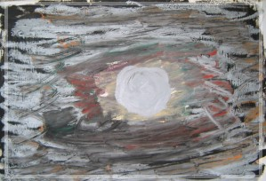

庭煒，你真的走了嗎？ 力行國小導師 郭淑珍老師
微風斜陽中，漫步在空蕩的校園裡，抬頭望著二八的教室，忡反覆的想著：﹁庭煒，你真的走了嗎？八月三十日你真的不會來了嗎？﹂
兩年前的新生開學日，第一次看到這個戴著粉紅色小帽子的小女孩，心中油然而生的是萬分的難過和些許的擔憂：難過的是被病魔侵襲的小庭煒，和班上其他三十四個小朋友比起來，是那麼瘦弱、蒼白；擔憂的是她能適應學校生活嗎？我該如何照顧她、教導她呢？
回憶是一首唱不完的歌，雖然兩年來庭煒上學的日子加起來還不到七十天，但是對二八的每一個老師和同學來說，和庭煒一起學習的每一天都是快樂又難忘的回憶。上課時，她總是那麼認真、那麼投入，每一樣作業都是那麼用心、那麼求好；下課時，開朗大方的庭煒很快的和同學玩在一起，談談天、說說笑，看起來是那麼活潑快樂、充滿朝氣……，有時我不禁會想：﹁如果時間就此停住了，該有多好啊？﹂
親愛的庭煒：在我師和同學心目中，你是一個聰明、勇敢、認真、堅強的好女孩，雖然你已經離開我們了，但是你的真、你的善、你的美，卻早已留存在我們的心中，你是我們永遠永遠的好朋友、永遠永遠的小天使。
萬分的不捨還是叫不醒沈睡的你，無盡的思念依然喚不回離去的你；親愛的庭煒：祝福你在天上的世界…健康、快樂、幸福、平安！
|  |
•銀色的月光 明晰的滿月，氤氳著銀白的月暈，庭煒小畫家眼裡浪漫的景緻是這般的溫柔清美！ |